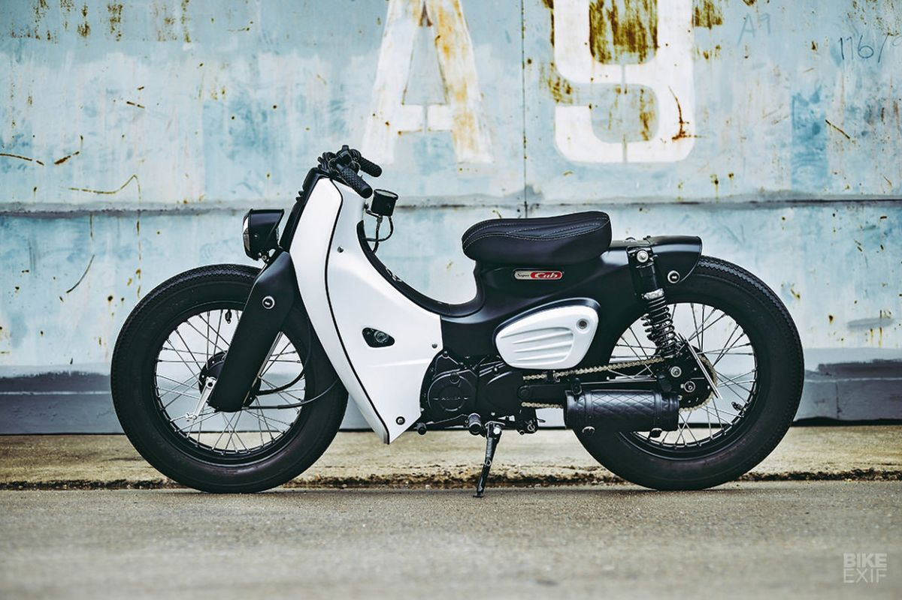

STREETCUB
Streetcub comes from two words, namely street and cub. Street means road and cub is the term for small cc Honda motorbikes, mostly motorbikes from the past (the grandfather of today's Honda motorbikes). So streetcub can be interpreted as a small cc motorbike that is on the street
